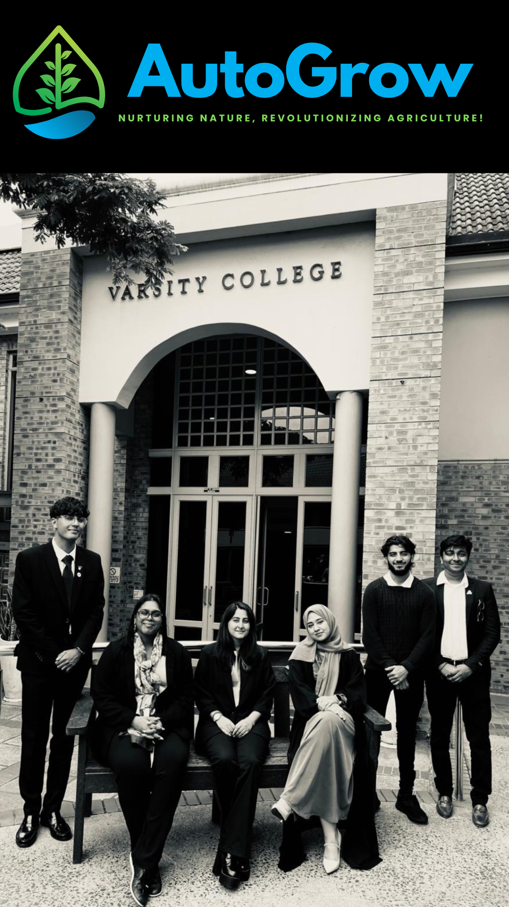

Software Developer
Lubnah Olideen
It is time to Code. Create & Innovate.

I’m Lubnah Olideen, a software development graduate with a love for coding, web construction, data analytics, and app design. My academic journey has been marked by consistent excellence, earning distinctions across computer science, programming, and project management. In 2024, I completed my Bachelor of Computer Application Development (BCAD) at Varsity College and was recognized as a member of the Golden Key International Honour Society.
I’ve had the opportunity to take the role of project manager and contribute to meaningful projects, including SmartHydro, an AI-integrated hydroponic farming system. As part of a team of five students, I helped design and maintain both hardware and software components. Along the way, I’ve built Android applications with Kotlin, developed websites using ASP.NET Core MVC, and worked with databases such as Oracle, MongoDB, and SQL Server.
Collaboration is where I thrive. I bring strong project management skills, from team leadership and stakeholder communication to risk management and scheduling, while staying curious and adaptable to new technologies. I enjoy blending creativity with technical precision to deliver solutions that make a difference.
Outside of tech, I recharge through padel, horse riding, archery, sewing, cooking, and baking — activities that keep me balanced and inspired.
I’m excited to continue growing as a developer, contributing to dynamic teams, and creating solutions that connect innovation with real-world impact.
Bachelor of Computer Application Development | Varsity College (BCAD), Class of 2024
SmartHydro was an AI-integrated hydroponic farming system developed by a team of five students at Varsity College. The project applied machine learning algorithms to analyze sensor data and automate adjustments to water, nutrients, and lighting, ultimately improving plant growth and efficiency. Built using C#, SQL, and .NET Core, the system incorporated robust database management with Oracle, MongoDB, and MySQL Workbench, alongside Android applications in Kotlin with Firebase Authentication and operational websites using ASP.NET Core MVC. The initiative combined technical innovation with practical problem-solving, demonstrating how AI can be harnessed to transform agriculture through sustainable, data-driven solutions.

Provided tutoring in Coding & Robotics, Mathematics, English, and Science for primary school students.
Handled transactions, customer communication, and organization during holiday periods.


Golden Key International Honour Society Member (2024)
📍 KwaZulu-Natal, South Africa